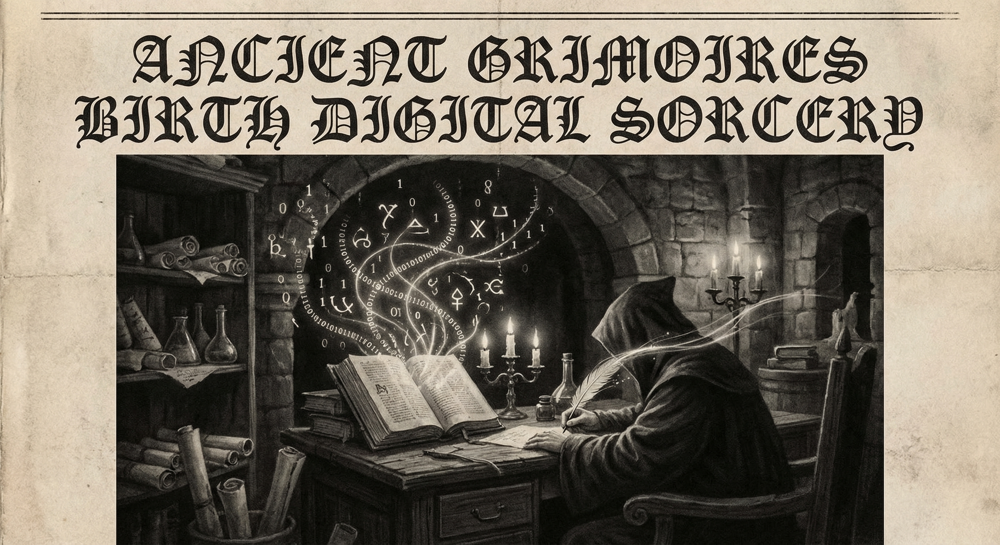

Morning Edition
6:00 AM CSTMarkets & Finance
Markets Brace for CPI Data
Wall Street futures slip as investors await February's CPI report amid continued Iran conflict fallout. Oil held below $90/barrel after reports of proposed strategic reserve releases boosted confidence. Nvidia shares rose 1.16% to ~$184.77 as the semiconductor and AI sector shows resilience despite geopolitical headwinds.
— Source: Bloomberg, Yahoo Finance, Stock Market WatchVolatility Persists
Global markets continue experiencing widespread volatility as the Iran conflict enters a new phase. Indian markets saw significant declines with Nifty50 dropping below 24,000. Investors remain cautious as energy prices and geopolitical uncertainty weigh on sentiment.
— Source: Times of India, MoneycontrolTech & AI
Wednesday Wisdom
Midweek arrives—the hump that leads to momentum. Tuesday's foundation now needs iteration. Debug your thinking as you debug your code. The best solutions often come when you step back and see the whole system. Test early, test often. Your Wednesday commits should be confident ones.
— Source: Developer Horoscope Wisdom
The Algorithmic Alchemist: Where Ancient Wisdom Flows Into Digital Streams.
"Wednesday is the pivot day—the summit of the week where vision meets execution. You've assessed the terrain, now traverse it with purpose. Every bug fixed is a lesson learned. Every feature shipped is a promise kept. Code with the patience of a master and the curiosity of a beginner. The middle of anything is where the real work happens. Embrace the complexity, simplify the solution, and remember: the best developers aren't the ones who write the most code, but the ones who understand the problem deepest."— Developer's Wednesday Wisdom
Sagittarius Horoscope
Wednesday calls for strategic patience, Archer. The Moon's influence suggests holding your fire until the moment is right. Your natural optimism is an asset, but today demands precision over enthusiasm. A conversation you've been avoiding may finally reach resolution—approach it with honesty, not avoidance. The week's midpoint offers clarity on a decision that's been lingering. Trust your aim, but take time to line up the shot. Not every target needs to be hit today.
— Cosmic tip: Strategic patience, honest conversations, midweek clarity, Mar 11, 2026World & US News
-
"Most Intense Day" of US Strikes:
Defense Secretary Pete Hegseth announced today marks the most intense day of US strikes on Iran. The conflict continues to escalate as Tehran warns it will block oil shipments until attacks end.
-
Strait of Hormuz Crisis:
Three vessels hit by unknown projectiles in the Strait of Hormuz. US forces destroyed 16 Iranian mine-laying vessels near the strategic waterway. Saudi Arabia intercepted seven ballistic missiles targeting air bases.
-
Humanitarian Impact:
Pope Leo lamented civilian deaths and expressed closeness to Lebanon, calling it a "great trial." Nearly 700,000 people displaced in Lebanon as Israeli bombing campaign continues. Four killed in IDF strike on central Beirut.
-
Global Reactions:
British police banned a pro-Iranian London march citing "extreme tensions." Russia stated it remains in contact with Iranian leadership. Thai Phuket airport temporarily closed after Air India Express plane malfunction.
Active Reminders
- Build Oomi iOS and Android app
- Plaid Integration Research
- Connect Nemu to Notion
- Research VPN/proxy services
- Create security OpenClaw bot